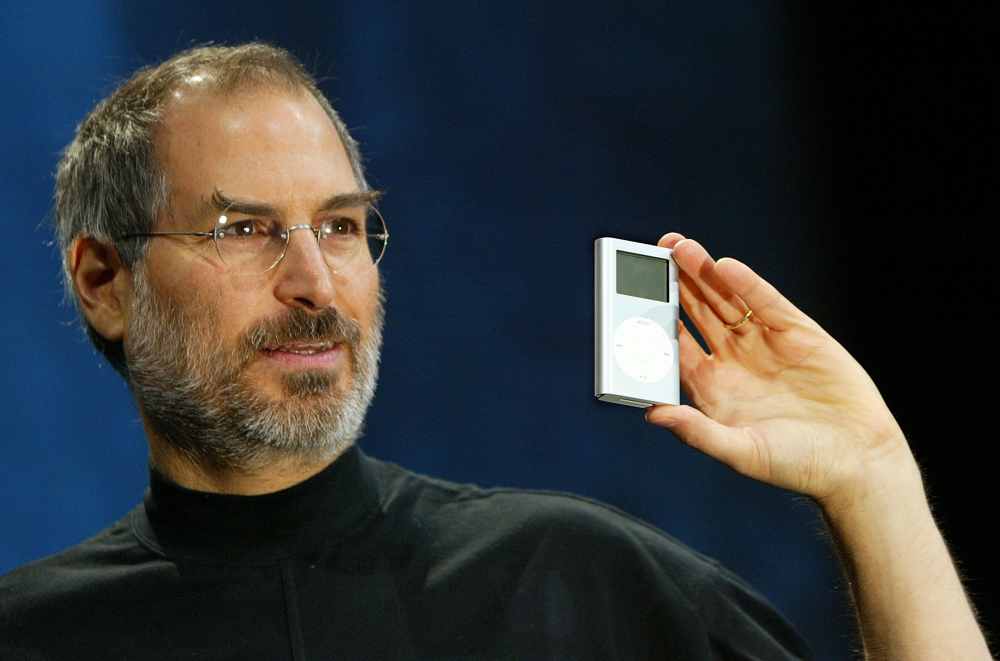

Steve Jobs
February 24, 1955 - October 25, 2011

Jobs holding an early verison of the ipod that would begin to revolutionize an industry.
Awards and Recognition
- 1985: National Medal of Technology (with Steve Wozniak)
- 1987: Jefferson Award for Public Service
- 1989: “Entrepreneur of the Decade” by Inc. Magazine
- 2007: Steve Jobs being named as the “most powerful person” in business by Fortune Magazine and inducted into the California Hall of Fame located at the California Museum for History, Women and the Arts
- 2012: Grammy Trustees Award, an award for those who influence the music industry in areas that are unrelated to performance
- 2013: Having the induction as a legend of Disney